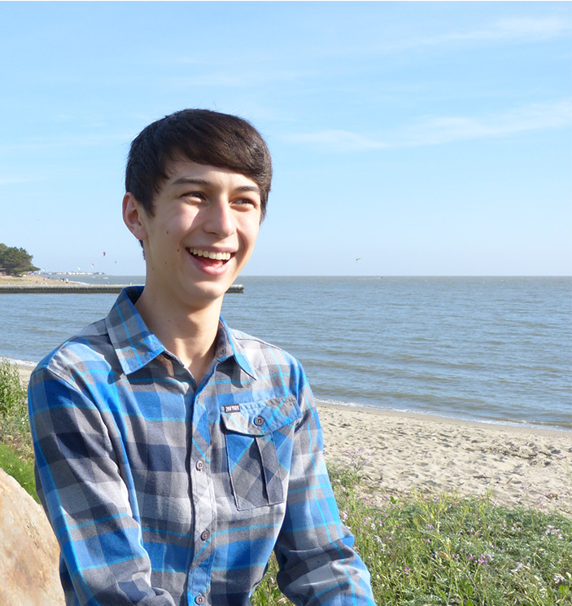

If someone were to describe what Alex does in two words, they’d be electronics and coffee. His electronics design
projects range from smaller than a postage stamp to an entire Formula SAE car, and his personal project is pursuing
the golden ideal of the latte in his independent coffee shop. He was the main electrical engineer for ReFilament,
designing motor and heating control and sensing system hardware and Arduino software.
I am Celina / I grew up near a marina / On Maui, where I built / My love for engineering. / More than anything, / I care
about people’s feelings, / So I design and sing and act and dance. / You can’t stop me. / I know who I want to be / And
yes, I’m a code monkey / I’m at Olin learnin’ about the world / And how I can make it better. / Now I’m writing this
letter / I hope you find it clever / It’s nice to meet you!
Basically a robot at this point, Isaac began life as a human interested in designing tech to help other humans
explore things in a place they couldn't easily visit: the bottom of the ocean. Since choosing to pursue this
passion at Olin, Isaac has gained experience in rapid prototyping, designing waterproof electrical systems, mechanical
design, and talking to whales. Isaac's main responsibilities on the ReFilament team lay in the mechanical and
systems integration space and he also made what he would describe as a "totally awesome" website.
Believed to be the world’s only German-American baby giraffe, Linnea is proud to bring her unique perspective to Olin’s class of 2019. After spending her high school years employed as a bookseller in Buffalo, New York, Linnea decided that engineering was her calling and only looks back about once a month. She’s still delaying that major declaration, but will likely spend her life working towards a more sustainable society. Linnea’s main contributions to ReFilament included designing and fabricating the spooling system, sorting out the mechanical component of the calipers, making housings, and being on time to nearly all meetings.

Nathan Yee
Born in the Bay Area, Nathan grew up loving violin and math. Currently, he studies Engineering with Computing at Olin
College of Engineering. If you ever see Nathan, he is probably programming with a loud mechanical keyboard, 3D printing,
building waterproof drones, playing violin, fixing his linux install, or learning new math. On ReFilament, Nathan worked
on the primary mechanical system (barrel, screw, nozzle, system housing), and data communication between the GUI and the Arduino.